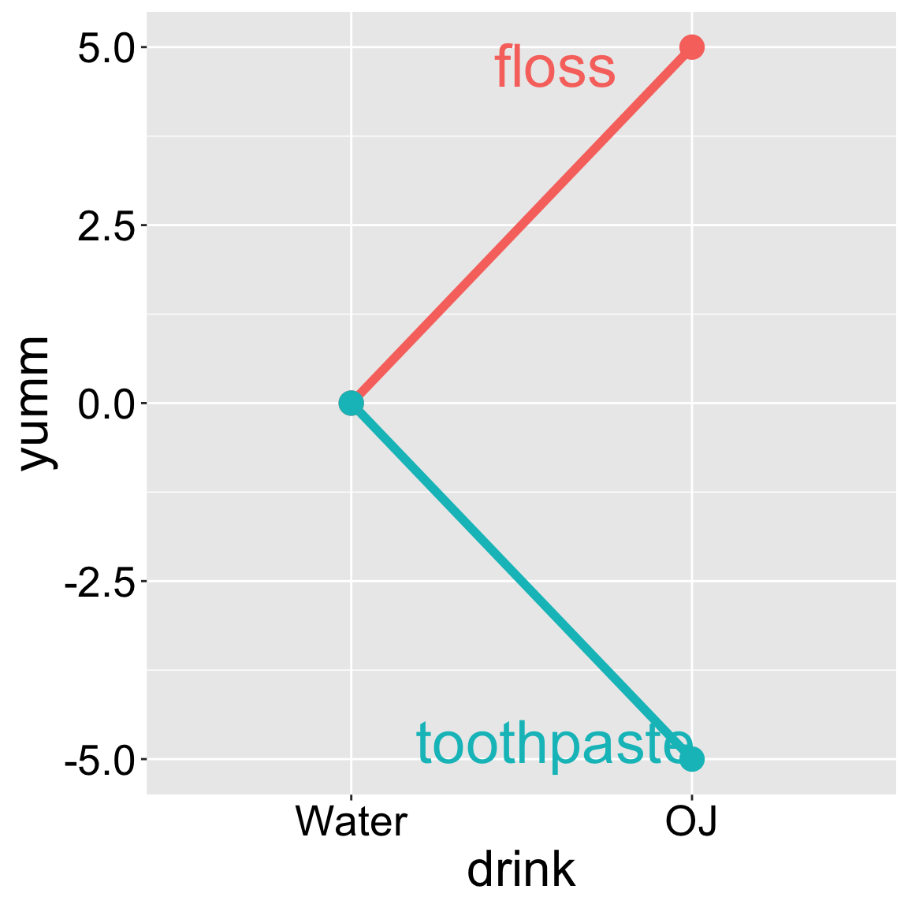
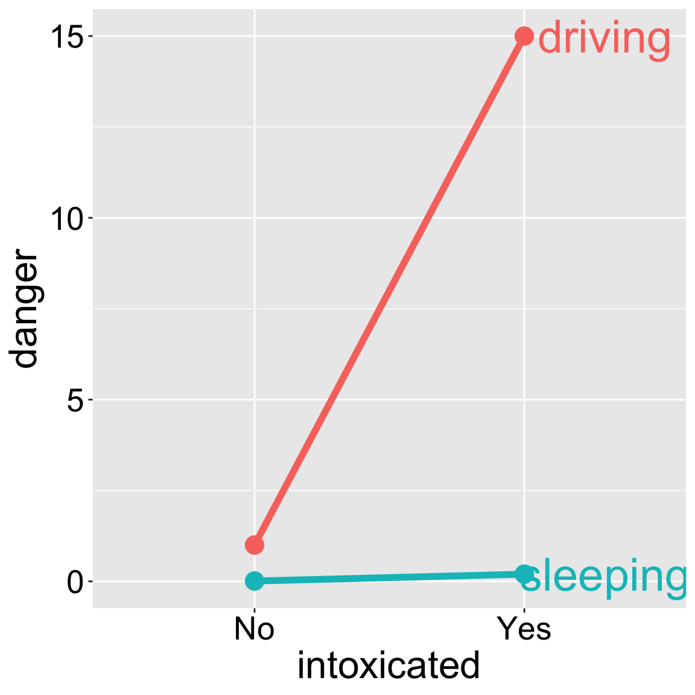
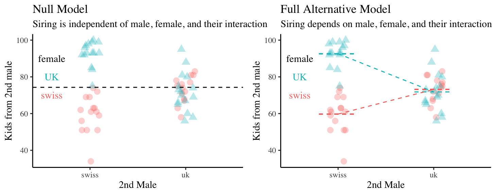
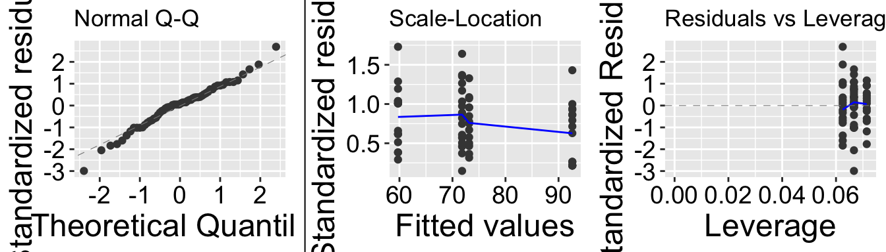

23. Interactions
Motivating scenarios: We have numerous explanatory variables and want to develop an synthetic model. We are particularly interested in hypotheses in which the reponse variable may depend on an interaction between explanatory variables.
Learning goals: By the end of this chapter you should be able to
- Write down and interpret longer and more complex linear models.
- Interpret models with interactions and run them in R R.
- Calculate Type I, II, and II sums of squares and recognize when one is most appropriate.
Review of Linear Models
A linear model predicts the response variable, as \(\widehat{Y_i}\) by adding up all components of the model.

\[\begin{equation} \hat{Y_i} = a + b_1 y_{1,i} + b_2 y_{2,i} + \dots{} (\#eq:predlong) \end{equation}\]
Linear models we have seen
We have recently extended our single factor linear models (e.g. one and two sample t-tests, ANOVAs, regression, etc.) to include more factors:
- We could include a linear term and its squared value to predict a quantitative outcome in a polynomial regression. \(\widehat{Y_{i}} = a + b_{1,i} \times y_1 + b_{2,i} \times y_1^2\)…
- A linear model in which we predict a quantitative response as a function of two categorical variables (two factor ANOVA without an interaction)
- A linear model in which we predict a quantitative response as a function of one continuous variable that we want o account for (aka a covariate) before considering the effect of a categorical predictor (ANCOVA).
Here we look at these in more detail. Specifically, we consider
- Cases in which the response is predicted by an interaction between explanatory variables
- Different ways to attribute sums of squares, depending on your goals / motivation.
Statistical interactions

I like orange juice in the morning. I also like the taste of minty fresh toothpaste. But drinking orange juice after brushing my teeth tastes terrible.
This is an example of an interaction.
- On its own, toothpaste tastes good.
- On its own OJ is even better.
- Put them together, and you have something gross.
This is an extreme case. More broadly, an interaction is any case in which the slope of two lines differ – that is to say when the effect of one variable on an outcome depends on the value of another variable.

Another example of an interaction Getting intoxicated is a bit dangerous. Driving is a bit dangerous. Driving while intoxicated is more dangerous than adding these up individually.
Visualizing main & interactive effects
There are many possible outcomes when looking into a model with two predictors and the potential for an interaction. I outline a few extreme possibilities, plotted on the right.
- We can see an effect of only variable A on Y. That is, lines can have nonzero slopes (“Main effect of A”).
- We can see a effect of only variable B on Y. That is, lines can have zero slopes but differing intercepts (“Main effect of B”).
- We can see an effect of only variable B on Y, but an interaction between that variable and the other. That is, intercepts and slopes can differ (or vice versa) in such a way that the mean of Y only differs by one of the explanatory variables (e.g. “Main effect of B, Interaction between A & B”). and/or
- We can have only an interaction. That is, on their own values of A or B have no predictive power, but together they do. (different slopes)
Interaction case study

Females of the yellow dung fly, Scathophaga atercoraria, mate with multiple males and the sperm of different males “compete” to fertilize her eggs.
What determines whether a sperm is competitive? To find out, Hosken et al. (2002) tested if/how the origin (from UK or Switzerland) of males and females (and their interaction) influence the percentage of offspring sired by the second male.
So our model is:
\[\text{SIRING } 2^\text{ND}\text{ MALE} = \text{FEMALE} + \text{MALE} + \text{FEMALE} \times \text{MALE}\]
Biological hypotheses
There are a few possibilities.
- Perhaps females from the UK populations reject (or accept) more sperm from the second male than do females from Sweden (main effect of female population).
- Perhaps sperm from UK males have more (or less) siring success than sperm from UK males second male (main effect of male population).
- Or maybe, sperm from Swedish males has high siring success with Swedish females, and sperm from UK males has high siring success with UK females (interaction), suggesting harmonious co-adaptation.
- Or maybe females have evolved to resist local sperm so sperm from Swedish males has high siring success with UK females but low siring success with Swedish females, suggesting a conflict between the sexes.
etc… etc…
The data
The raw data are available here if you want to follow along.
Before we analyze it, I am confessing to changing it for teaching purposes. Specifically I am taking the first data point and saying it came from a mating between a UK female and a swiss male.
dung <- tibble(female = c("uk",rep(c("swiss","swiss","uk","uk"), each= 15)[-1]),
male = rep(c("uk","swiss","uk","swiss"), each= 15),
sire.2nd.male = c(74, 77, 72, 81, 75, 76, 78, 68, 81, 74, 71, 58,
67, 63, 83, 74, 63, 51, 63, 69, 61, 34, 51, 62, 61, 69, 59, 72,
51, 56, 58, 73, 88, 80, 67, 65, 95, 72, 75, 69, 70, 56, 66, 60,
81, 92, 96, 98, 99, 85, 84, 93, 75, 93, 99, 92, 93, 93, 100, 97))Looking at the means and standard errors below, we see that
- UK males have similar mating success with both UK and Swedish females.
- Swedish males seem to have remarkably low success with Swedish females and remarkably high success with UK females. This suggests a history of conflict between the sexes over the success of the second male.
| female | swiss male | uk male |
|---|---|---|
| swiss | 59.73 (2.6) | 73.14 (1.9) |
| uk | 92.6 (1.7) | 71.81 (2.6) |
Fitting a linear model with an interaction in R
In R we can designate an interaction in addition to main effects with a colon, :. Or we can have R do a full model with a *. So the two models below are identical
lm_dung_fmi <- lm(sire.2nd.male ~ female + male + female:male, dung)
lm_dung_fmi <- lm(sire.2nd.male ~ female*male , dung)
broom::tidy(lm_dung_fmi)# A tibble: 4 × 5
term estimate std.error statistic p.value
<chr> <dbl> <dbl> <dbl> <dbl>
1 (Intercept) 59.7 2.30 26.0 6.21e-33
2 femaleuk 32.9 3.25 10.1 3.05e-14
3 maleuk 13.4 3.31 4.05 1.57e- 4
4 femaleuk:maleuk -34.2 4.60 -7.43 6.70e-10As usual, we can look at our estimates and uncertainty in them with the summary.lm() or equivalently, the tidy() function. As like most linear model we know that these p and t-values (which shows up at statistic in tidy()) do not necessarily describe things we care about, and may be misleading.
Still, we can use this output to make predictions. The first terms should look familiar. For the final term femaleuk:maleuk we multiply femaleuk (0 or 1), by maleuk (0 or 1) as the thing we multiply this effect by. That is, when the male and female are from the uk this is 1, and second males in this cross have 34.2% less siring success than we would predict if we added up the effect of male uk and female uk. Because multiplying femaleuk (0 or 1), by maleuk (0 or 1) is zero in all other cases, it only shows up in this one cross.
We can see this in the design matrix (below). Remember for the linear algebra fans that we make predictions as the dot product of our model coefficients and the design matrix.
model.matrix(lm_dung_fmi) %>% DT::datatable(options = list(autoWidth = TRUE,pageLength = 5, lengthMenu = c(5, 25, 50)))Or, if you don’t want to mess with linear algeba, the model predicts siring success of the second male as follows
\[\begin{equation} \begin{split} & \text{intercept} &\text{female UK?}&\text{male UK?}&\text{both UK?}&\widehat{Y_i}\\ \widehat{Y}_\text{female.swiss x male.swiss} = &59.733 \times 1+ &32.867 \times 0 + &13.410 \times 0 -&34.197\times 0 =&59.733\\ \widehat{Y}_\text{female.swiss x male.uk} = &59.733 \times 1+ &32.867 \times 0 + &13.410 \times 1 -&34.197\times 0 =&73.14\\ \widehat{Y}_\text{female.uk x male.swiss} = &59.733 \times 1+ &32.867 \times 1 + &13.410 \times 0 -&34.197\times 0 = &92.60\\ \widehat{Y}_\text{female.uk x male.uk} = &59.733 \times 1+ &32.867 \times 1 + &13.410 \times 1 -&34.197\times 1 = &71.83\\ \end{split} \end{equation}\]
We can see that the model predictions simply describe our four sample means.
Hypothesis testing
Statistical hypotheses
We can translate the biological hypotheses into three pairs of statistical null and alternative hypotheses.
We examine three null and alternative hypotheses
- Main effect of Male
- \(H_0:\) Siring success is independent of male origin.
- \(H_A:\) Siring success differs by male origin.
- \(H_0:\) Siring success is independent of male origin.
- Main effect of Female
- \(H_0:\) Siring success is independent of female origin.
- \(H_A:\) Siring success differs by female origin.
- \(H_0:\) Siring success is independent of female origin.
- Interaction between Male and Female
- \(H_0:\) The influence of male origin on siring success does not differ by female origin.
- \(H_0:\) The influence of male origin on siring success is depends on female origin.
- \(H_0:\) The influence of male origin on siring success does not differ by female origin.
We visualize these hypotheses below

Evaluating assumptions
Remember that linear models assume
- Linearity: That observations are appropriately modeled by adding up all predictions in our equation.
- Homoscedasticity: The variance of residuals is independent of the predicted value, \(\hat{Y_i}\) is the same for any value of X.
- Independence: Observations are independent of each other (aside from the predictors in the model).
- Normality: That residual values are normally distributed.
- Data are collected without bias as usual.
Taking a look at our diagnostic plots, it looks like data meet test assumptions:
autoplot(lm_dung_fmi,nrow = 1, which =c(2,3,5), label = FALSE)
Hypothesis testing in an ANOVA framework: Types of Sums of Squares
tl/dr
- We need to come up with fair ways to attribute variance in larger linear models.
- Type I Sums of Squares (calculated with the
anova()function) are most appropriate when we want to take a “covariate into account”. The order we enter terms into our model can change p and f values with Type I sums of Squares.
- Type II Sums of Squares are most appropriate when we are equally interested in all main effects as interesting hypotheses.
- Type III Sums of Squares are most appropriate when we are equally interested in all main and interaction effects as interesting hypotheses. want to take a “covariate into account”.
- Type I Sums of Squares (calculated with the
- We can specify which type of sums of squares we want to use with the
Anova()function in thecarpackage.
- If our study is “balanced” type I and type II sums of squares will give identical answers.
- All of these can go a bit weird in different cases, especially with unbalanced designs.
For our case, a Type III Sum of Squares is probably most approriate.
Type I and Type II Sums of Squares
In the previous chapter, we calculated Type I and Type II sums of squares, and saw that Type I Sums of Square – in which the order of the variables changed our significance claims – are rarely a good idea.
Recal that with Type II sums of squares, we found \(SS_\text{focal variable}\) as \(SS_\text{full model}- SS_\text{full model except focal variable}\). If we are also modlling an interaction, we calculate type II sums of sqaures as:
\[SS_\text{focal variable} = SS_\text{model with all main effects} - SS_\text{model with all main effects except the focal variable}\]
Then, after calculating sums of squares for the main effects, we calculate the sums of squares for the interaction as:
\[SS_\text{interaction} = SS_\text{full model with focal interaction} - SS_\text{full model without focal interaction}\]
We can calculate any type of sums of squares with the Anova() function in the car package.
library(car)
Anova(lm_dung_fmi, type = "II")Anova Table (Type II tests)
Response: sire.2nd.male
Sum Sq Df F value Pr(>F)
female 3739.2 1 47.1967 5.674e-09 ***
male 271.9 1 3.4324 0.0692 .
female:male 4375.6 1 55.2292 6.695e-10 ***
Residuals 4436.7 56
---
Signif. codes: 0 '***' 0.001 '**' 0.01 '*' 0.05 '.' 0.1 ' ' 1There are two weird things about Type II Sums of squares:
- They don’t sum to total sums of squares.
- It’s a bit weird to talk about the significance of a main effect without considering an interaction.
Type III Sums of Squares
If we care about an interaction and main effects it makes sense to not leave interactions for last. In this case, we calculate Type III Sums of Squares for each variable and interaction by comparing the predictions with the full model to predictions with everything but the variable (or interaction) we’re interested in. Again we can do this with the Anova() function in the car package. Again, order won’t matter.
Anova(lm_dung_fmi, type = "III")Anova Table (Type III tests)
Response: sire.2nd.male
Sum Sq Df F value Pr(>F)
(Intercept) 53521 1 675.545 < 2.2e-16 ***
female 8102 1 102.259 3.046e-14 ***
male 1302 1 16.435 0.000157 ***
female:male 4376 1 55.229 6.695e-10 ***
Residuals 4437 56
---
Signif. codes: 0 '***' 0.001 '**' 0.01 '*' 0.05 '.' 0.1 ' ' 1Type II or Type III Sums of Squares
I find it difficult to think about which type of sums of squares to use. In general, I prefer to use Type II sums of squares when interactions are subtle, and Type III when interactions are strong enough that main effects become difficult to interpret or explain.
Biological coclusions for case study
We conclude that female (F = 102.259, df = 1, p = \(3\times 10e^{-14}\)) and male (F = 16.4, df = 1, p = 0.00016) population of origin, and their interaction (F = 55.2, df =1, p = \(6.7 \times 10^{-10}\)) all impact the siring success of the second male. Most notably, the interaction between male and female population of origin seemed to matter substantially – when females and second males where both from the UK siring success was way lower that expected given each main effect. This suggests that sexual conflict in the UK might modulate the competitiveness of second sperm. Future work should address why the siring success of second males from Sweden was not notably impacted by maternal population of origin.